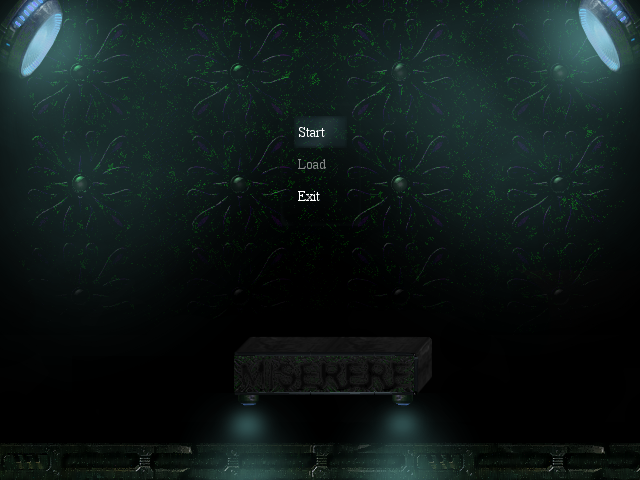
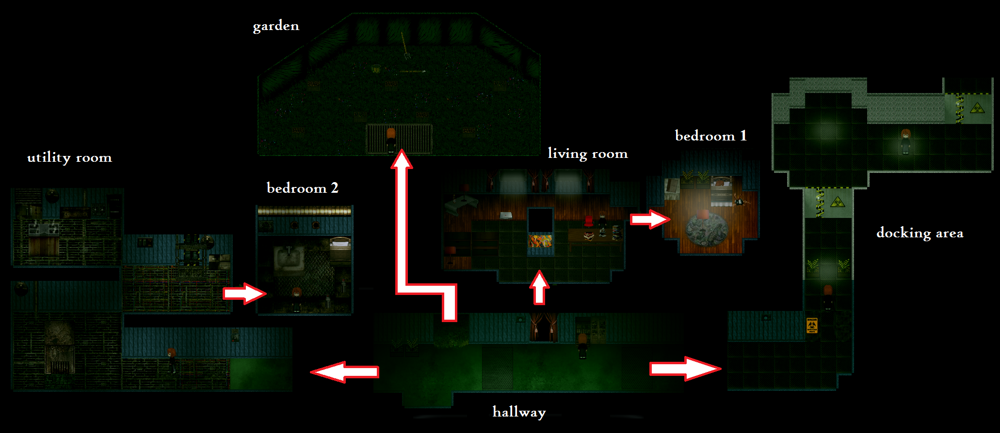
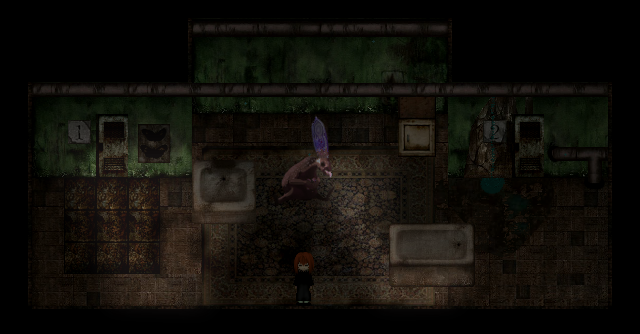
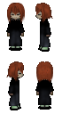
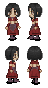
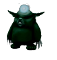

Miserere is an atypical yume nikki fangame created by owl. The dream world is HUGE, and absolutely abysmal. You collect items, NOT effects in this game. Visit the official fandom wiki page for download info among other things. However there is no substantial amount of info on fandom to help you crack the game. Hopefully this pet project will help you through Miserere. Enjoy! ;-)

The game can be divided into 2 stages. You have to clear the 1st stage (namely Dream World 1) to proceed to the 2nd stage (Dream World 2). The 1st stage is more about exploring the dream world, collecting items and helping NPCs. In the 2nd stage, you will find out more about the past of protagonist. Miserere does have a strong storyline compared to other ynfgs.
Reality World
The red-haired protagonist lives in space station(?). You first wake up in the living room. The room will have subtle changes as you make progress in the game. There are two bedrooms where you can sleep, the one next to the living room, and the one in the utility room.
At first, you can only sleep in Bedroom 1 and explore Dream World 1. After you have cleared stage 1, you will sleep in Bedroom 2 to visit Dream World 2.

Dream World 1
Dream world 1 is pretty conventional (layout-wise). The Nexus has 4 doors for access to numerous sub-worlds, and as you progress you will unlock 2 portals as well.
The ultimate goal is to collect all doll parts and give them to the old lady in Paradise World. She will let you through to The Hole (marked by a star on the map) to unlock Dream World 2.
You still need to visit Dream World 1 in stage 2 to see some buried memories. That would be in the cauldron room (accessible from Floating Light World).

*Note: click to view original image
red line: two-way
pink line: only one-way
green item: what u get in this area
gray item: what u use (/to get to) this area.
Dream World 2
Dream World 2 starts off in a leaky apartment. There are 2 doors marked 1 and 2, the first leading to a rusty building, and the second leading to the sewers.

Characters

The red-haired protagonist, living alone away from Earth. Not really human(?), sewer mutant. (kinda like Fleshchild?) Seems to like movies. Had a collection of books about dreams. His mother was killed by Carrie.

A girl named Carrie. She's not quite so innocent as she seems. Carrie is a fine warrior of the organization Terra Puritatem. The protagonist's arch enemy. Even though she no longer poses a real threat to the protagonist, she continues to live in his nightmares.

Minor character called Lh'rye. standing in front of the stone house east to the stone head. Doesn't do anything, but very wise.
Minor character called King Kud. standing in the Stone Buddha Path. Doesn't do anything, but deeply thankful.
There are many other minor characters in the game but I'm not gonna elaborate on them. Also you'll find many scary-looking but quite harmless NPCs floating around.
For more yumenikki fangames check out My Tumblr Page. You can leave me a message over there or here on github.